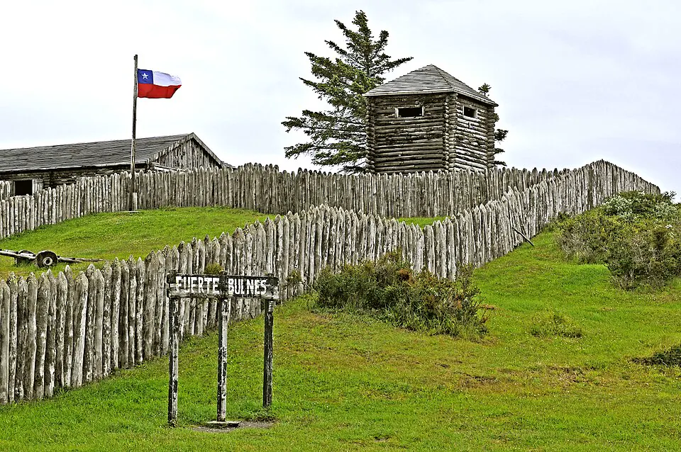

Fuerte Bulnes y el Estrecho de Magallanes

El estrecho de Magallanes era clave para la navegación entre el Atlántico y el Pacífico, sobre todo con la llegada de los barcos a vapor. Chile temía que una potencia europea, como Gran Bretaña o Francia, se instalara en la zona. Bernardo O'Higgins, desde su exilio en Perú, había insistido en la importancia de ocuparlo.
Durante el gobierno de Manuel Bulnes se organizó una expedición desde Chiloé en la goleta Ancud, al mando del marino Juan Williams. El 21 de septiembre de 1843 tomó posesión del Estrecho de Magallanes y luego levantó el Fuerte Bulnes en la península de Brunswick, cerca del antiguo Puerto del Hambre. Las duras condiciones del lugar llevaron a trasladar el asentamiento en 1848 más al norte, donde nació Punta Arenas.
La toma de posesión fue la base de la soberanía chilena en el estrecho, que el Tratado de Límites con Argentina de 1881 confirmó. Para los pueblos originarios de la zona, como los kawésqar, aónikenk, selk'nam y yaganes, la llegada del Estado y, después, de colonos y estancias ganaderas significó grandes pérdidas de territorio y de población.
Versión para niños
El 21 de septiembre de 1843, una pequeña goleta llamada Ancud, que había zarpado desde Chiloé, llegó al Estrecho de Magallanes. Su tripulación, dirigida por el capitán Juan Williams, tomó posesión del estrecho en nombre de Chile. Allí construyeron un fuerte de madera al que llamaron Fuerte Bulnes, en honor al presidente Manuel Bulnes. Vivir ahí era difícil por el frío y el viento. En esas tierras ya vivían pueblos como los kawésqar y los aónikenk.
Para maestros
Nivel sugerido: 1° medio
Objetivo: Analizar la ocupación del estrecho de Magallanes como parte de la configuración del territorio chileno en el siglo XIX y sus efectos sobre los pueblos australes.
Preguntas para la clase:
- ¿Por qué el estrecho de Magallanes era tan importante en el siglo XIX?
- ¿Qué dificultades enfrentaron quienes vivieron en el Fuerte Bulnes?
- ¿Cómo cambió la vida de los pueblos kawésqar, aónikenk, selk'nam y yagán con la llegada del Estado y de los colonos?
Actividad (20–30 min): Con un mapa del extremo sur, los estudiantes trazan la ruta de la goleta Ancud desde Chiloé y ubican el Fuerte Bulnes y Punta Arenas. Luego explican por escrito qué ventajas tenía el nuevo emplazamiento de 1848 y qué pueblos habitaban la zona.
Fuentes sugeridas: Memoria Chilena; Museo Regional de Magallanes; Museo Histórico Nacional.
Objetivos de Aprendizaje (Currículum Nacional)
- 6° básico · HI06 OA 05 Describir cómo se conformó el territorio de Chile durante el siglo XIX … entre otros factores
- 1° medio · HI1M OA 12 Describir los procesos de exploración y reconocimiento del territorio que impulsó el Estado … delimitar sus fronteras
- 1° medio · HI1M OA 13 Describir el proceso de ocupación de Valdivia, Llanquihue, Chiloé y el estrecho de Magallanes … destacando el rol de la inmigración europea
Personajes
Revisión humana pendiente. Cómo se revisa · Reportar un error
Cómo citar: Historia de Chile. (2026). Fuerte Bulnes y el Estrecho de Magallanes. En Historia de Chile: atlas y línea de tiempo. https://moises-salgado.github.io/historia-de-chile/momento/fuerte-bulnes-y-el-estrecho-de-magallanes.html